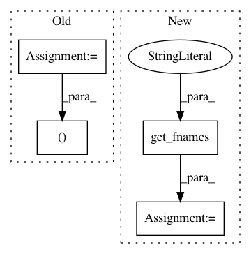

b9aac6f4f32d755595c577c5fc5ac0936a914031,doc/examples/brain_extraction_dwi.py,,,#,25
Before Change
from dipy.data.fetcher import fetch_scil_b0
from dipy.io.image import load_nifti, save_nifti
files, folder = fetch_scil_b0()
data, affine = load_nifti(pjoin(folder, "datasets_multi-site_all_companies",
"1.5T", "Siemens", "b0.nii.gz"))
data = np.squeeze(data)
After Change
from dipy.data import get_fnames
from dipy.io.image import load_nifti, save_nifti
data_fnames = get_fnames("scil_b0")
data, affine = load_nifti(data_fnames[1])
data = np.squeeze(data)
In pattern: SUPERPATTERN
Frequency: 3
Non-data size: 4
Instances
Project Name: nipy/dipy
Commit Name: b9aac6f4f32d755595c577c5fc5ac0936a914031
Time: 2020-01-03
Author: skab12@gmail.com
File Name: doc/examples/brain_extraction_dwi.py
Class Name:
Method Name:
Project Name: nipy/dipy
Commit Name: 23a07e8601cbdba5ece453864bc6d11e3431543e
Time: 2019-07-23
Author: francois.m.rheault@usherbrooke
File Name: dipy/workflows/tests/test_align.py
Class Name:
Method Name: test_slr_flow
Project Name: nipy/dipy
Commit Name: 0b1e027a6eeb60553930ae4752a07fc1c0bcc6b7
Time: 2021-04-03
Author: skab12@gmail.com
File Name: doc/examples/denoise_nlmeans.py
Class Name:
Method Name: